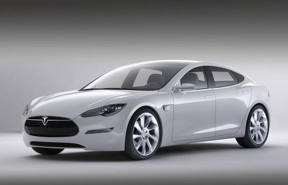

Какво ни очаква?
"Електрическите автомобили не са бъдещето, те са настоящето"
Много фирми започнаха работа по електрически двигатели и като цяло различни
версии за премахване на използването на горива като бензина и дизела. Много нови
модели са били показани на изложение на Тесла Моторс.
Над 85% от
моделите са напълно завършени и готови за производство автомобили, които ще ви
предвижат от София до Варна
примерно за не по-малко време, отколкото нормална кола. Друг плюс е, че няма да
заммърсявате околната среда, а и ще спестите НАД 90% от разхода си.
Цените на тези нови електрически автомобили са високи, но с причина. Те
нямат стандартния двигател с вътрешно горене, който се износва и поврежда. Те
имат малко подввижни елемента в двигателя, което всъщност е гигантска батерия.
Цената на един от стандартните модели на една от фирмите е около 35 000 лева.
Идва с всички екстри като навигация, затопляне на седалките, климатик и
прочее. В момента средният живот даван от едни от най-добрите фирми за
автомобили с ДВГ е 3 до 5-6 години. Електрическите получават среден живот, без
да се налага ремонт 8-14 години, затова и цената е малко по-висока.
Най-бавната Ел.кола направена от малка фирма, развива максимална скорост
90 километра в час и може да се движи 6 часа, без да спира. Най-скъпата и
съответно бърза и луксозна кола може да развие 260 килиметра в час и може да се
движи със 120 километра в час цели 10 часа., след което й е нужно зареждане от
около 2-3 часа и отново може да тръгнете. Реално това е много по-добро от
нормалните автомобили.

Eлектрически автомобил на ТЕСЛА
Rimac Concept_One е спортен електрически автомобил от Хърватска
Хърватският производител на автомобили Rimac Automobili очевидно не може да се съдържи и представи кола, която компанията твърди, че е най-бързият електрически автомобил произвеждан някога. Наречена Concept_One, въпреки че колата вече не е концепт.
Планирания световен дебют на автомобила ще е в началото на следващия месец на автомобилното изложение в Женева, Швейцария. Concept_One прилича на комбинация между Koenigsegg и Tesla.
Благодарение на своите 1.088-конски сили предоставяни от 8.450-клетъчна батерия и задвижване на четирите колела Concept_One достига до 100 км/ч от място за около 2.6 секунди и постига максимална скорост от около 350 км/ч. Това е бързо не само по стандартите на Тесла, а по всички стандарти.
За щастие, това не всичко е брутална мощност. Concept_One предлага комфорт, контрол, писта и дрифт режими на шофиране, което означава, че може да се адаптира към настроението на водача, било то спокойно, ведро или нервно да „вземете завоя настрани“.
Rimac Concept_One
Някъде по света
Китайците Geely стартират продажбите на електрическия модел Emgrand EV, който ще бъде първият подобен от цяла гама, която ще бъде лансирана в следващите години. На цена от около 18 000 евро, компактният седан предлага мощност от 127 к.с. при въртящ момент от 240 Нм. Пробегът с едно зареждане на батериите достига почти 250 км, а максималната скорост е 140 км/ч. Ако скоростта на движение не надминава 60 км/ч, пробегът може да нарасне до 330 км. Зареждането на батериите в 220-волтова мрежа отнема 12 часа. 80% от капацитета на акумулаторите може да бъде възобновен чрез скоростно зареждане за 30 минути.
Китайската компания със звучното германско име Weltmeister (Световен шампион), известна доскоро като WM Motor, публикува кадри на бъдещата си моделна фамилия електромобили и обяви амбициите си да се бори с лидера при електрическите автомобили Tesla.
Продуктите на китайците ще влязат в пряк пазарен сблъсък с моделите на Tesla, тъй като Weltmeister планира да стъпи на пазарите в Китай, САЩ и Европа.
Историята на WM Motor не е особено дълга – компанията е основана през 2015 година от Фрийман Шен, който има над 20-годишен опит на ръководни постове в големи компании: BorgWarner, FIAT, Geely и Volvo Китай. От първия ден на съществуването на WM Motor компанията обяви, че ще произвежда само електромобили и анонсира, че ще строи собствен завод в източната част на Китай.
Сега пазарната атака на Weltmeister добива по-ясни очертания: моделите ще са четири, всичките електрически – седан, комби, кросоувър и компактен ван.
Дизайнът и на четирите модела е сходен, поне това се вижда от картинките на компанията. По-рано се появи информация, че марката ще използва две платформи за моделите си, като те са разработени с ресурси на компанията. Други подробности за новите електромобили все още не са известни.
Заводът на Weltmeister трябва да е готов през 2018 година, а инвестициите в проекта се оценяват на 1 милиард долара. Фабриката трябва да произвежда до 200 000 електромобила годишно.
След две години компанията започва продажби в Китай, а след това ще стъпи и на пазарите в САЩ и Китай.
Geely